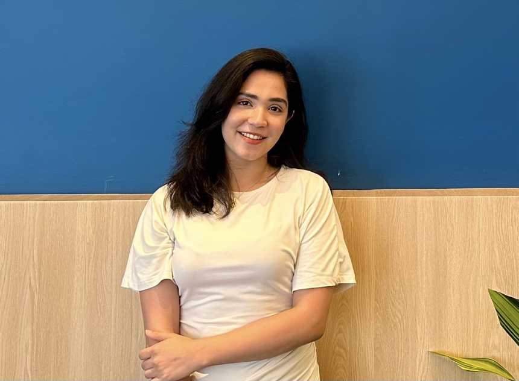

CAUSAL REASONING & LLM EVALUATION
Causal Reasoning & LLM Evaluation
Verifies LLM conclusions against causal graphs. Improved correctness from 68% to 84% on held-out problems.
San Diego, California

About Me
I’m a second-year M.S. Data Science student at UC San Diego, finishing in December 2026. At The Trade Desk, I worked as an Applied Science Intern on estimating ad reach with incomplete data. Before grad school, I spent nearly three years as a Data Scientist II at Deloitte, building forecasting, scoring, and NLP systems.
My background in economics and mathematics shapes how I think about causal inference, representation learning, and LLM evaluation. I’m drawn to problems where I can test when a model’s predictions hold up, especially with incomplete data. I’m exploring full-time roles in applied science, data science, and machine learning.
Selected Work
Modeled ad reach across 16B+ impressions with incomplete identity data and distilled the estimates into a LightGBM model with sub-50 ms inference.
Led instruction and supported labs and assessments in both terms.
Instruction, assessment design, and course logistics with Dr. Armin Schwartzman.
Course planning and grading with Dr. Peter Chi.
GPA: 3.97. Coursework: Causal Inference, Statistical Modeling and Probability, Scalable Data Systems, Responsible ML, Machine Learning and Deep Learning, Algorithms, Data Science and Society, Web Mining and Recommender Systems, and Advanced Data-Driven Text Mining.
Built forecasting, explainable scoring, NLP, and AWS pipelines, helping reduce backorders by 52% and improving defect detection yield by 1.6×.
Built a self-serve forecasting tool that used causal analysis and scenario testing to inform policy and budget decisions.
Used clickstream data to model demand and score listings for feed ranking and recommendations.
GPA: 3.88 · First Division with Honors.
Projects
Verifies LLM conclusions against causal graphs. Improved correctness from 68% to 84% on held-out problems.
Distilled a rubric-based summary judge with 85.5% agreement against human ratings.
Ranked listings and ads from clickstream data, achieving 15% higher NDCG@10 than a popularity baseline.
Skills
On GitHub
Loading contribution history…
Contribution data is temporarily unavailable. View GitHub ↗
Recommendations
Let’s build something cool together.